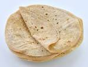

Homemade roti

Nothing to read. Just a simple roti recipe
Ingredients
Steps
- Add 250gms of wheat flour and all 100 ml of water.
- Knead the dough until a elastic consistency.
- Now roll the dough and cut it into small pieces of balls
- now flatten the dough and cut circles into it with a big plate.
- Now take the circles and cook them under flame for sometime till you observe the dough rising and fluffing up.
- Serve hot and Enjoy!!!